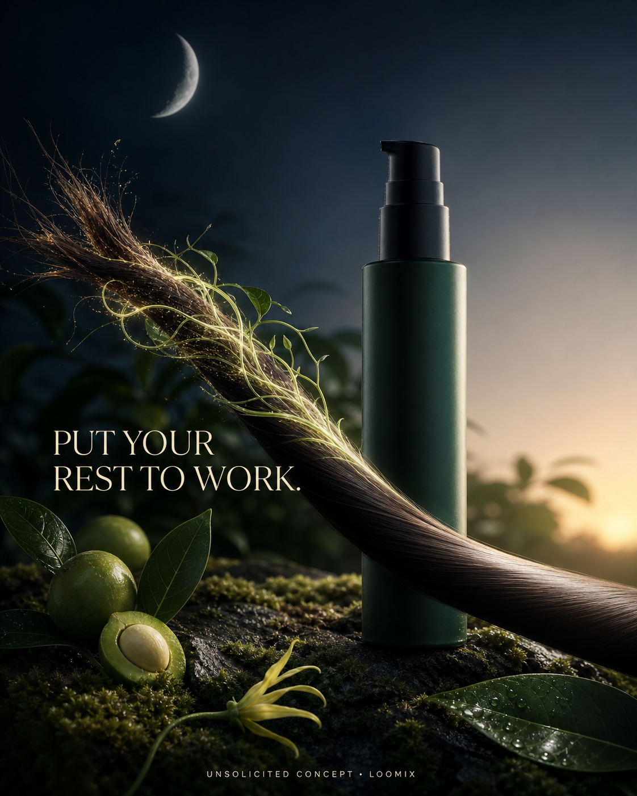

Concept created by LoomixUnsolicited concept
AvedaReels + TikTok9:168 seconds
Botanical Repair Overnight Serum — Put Your Rest to Work
Under moonlight, luminous plant fibers weave separated ends back together. Dawn reveals one smooth, softly reflective strand: a quiet visual metaphor for repair that works while you sleep.
Create with LoomixView official product
Hook options
“Put your rest to work.”
“Night shift, powered by plants.”
“Wake up to revived ends.”
8-second storyboard
Open on a split strand beneath a crescent moon.
Introduce one serum pump against dark botanicals.
Send luminous plant fibers toward the damaged ends.
Weave the separated fibers together through the night.
Transition the sky from moonlight to dawn.
End on the smooth strand, bottle, hook, and CTA.
Caption direction
A serene night-to-dawn transformation that turns plant-powered overnight repair into a visual ritual viewers understand instantly.
Made for rapid testing
Loomix turns one product image into a storyboard, short-video direction, captions, and ready-to-post ad copy.
This is an unsolicited creative concept made by Loomix for demonstration purposes. Loomix is not affiliated with or endorsed by Aveda.